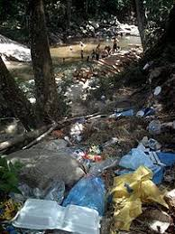
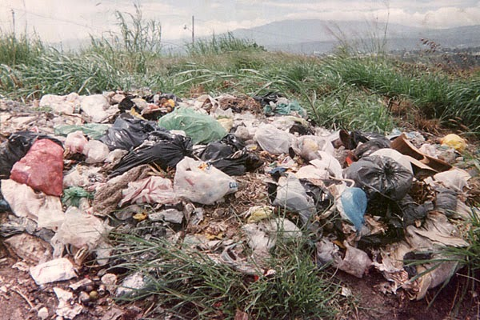
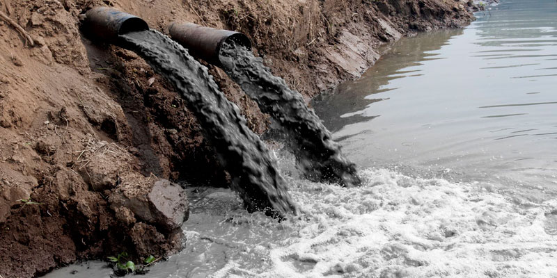
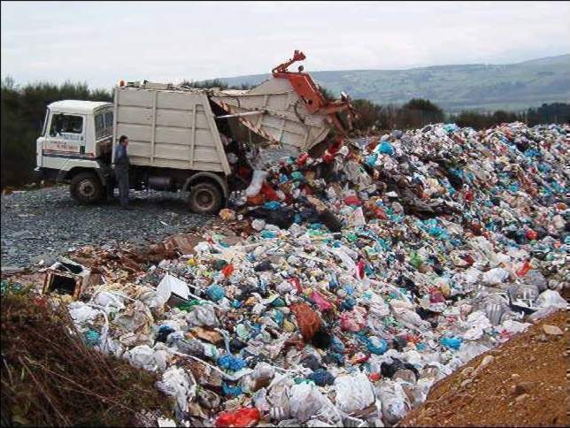
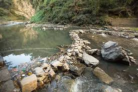

Esta es mi imagen de perfil:
¿Que es la comtaminacion?
Se muestran los tipos de contaminacion que existen
Demostracion de las consecuencias con enfoque al calentamiento global
¿cuales son la medidas para poder combatir la contaminacion?
¿Que es y como se clasifica?
Contaminación atmosférica
La más conocida, es el tipo de contaminación que surge de la liberación de partículas de sustancias químicas a la atmósfera.
Contaminación hídrica
trata del efecto de la emisión y liberación en las aguas de sustancias contaminantes. Se dificulta o altera la vida y el uso normativo, haciéndola no potable. Habitualmente esta contaminación es de origen industrial.
Contaminación radiactiva
Se trata de uno de los tipos de contaminación más peligrosos y agresivos con la vida.
Contaminación térmica
Uno de los tipos de contaminación menos conocidos, es generado por el cambio de temperatura en el entorno o en diferentes medios debido a la actividad humana.
Contaminación del suelo y del subsuelo
Provocada por la filtración de sustancias en el suelo, genera alteraciones físicas y químicas en éste que hacen que por ejemplo resulte inhabitable, se contaminen las aguas subterráneas o se imposibilite el crecimiento de vida en el área.
Mantener limpias las areas y esquinas, libres de basuras
Cuidar que todos los vecinos sean cooperativos y usen la reglas de las 3 R
Mantener las bolsas selladas para que la basura no caiga o este esparcida
Dejar de usar demaciada agua y parar todas las fugas de la misma
Saber reciclar perfectamente la basura
Saber las clacificaciones de la basura (organica e inorganica)
Separar porque la mayor parte de los residuos que tiramos son reutilizables y reciclables. Si los mezclamos los convertimos en basura lo cual dificulta su aprovechamiento. Al separar los residuos por su tipo promovemos su reciclaje. Con la simple acción de separar el papel, el plástico, el vidrio y la materia orgánica: facilitas la recolección de residuos, contribuyes a reducir el espacio que ocupan los residuos sólidos en los rellenos sanitarios y tiraderos, ayudas a alargar la vida útil de estos materiales, colaboras en la disminución de la contaminación ahorras recursos naturales y energía. Muchos de los residuos que van a parar a los tiraderos o rellenos sanitarios son materiales que pueden recuperarse y reciclarse.